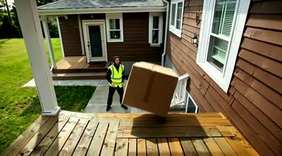
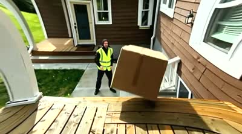
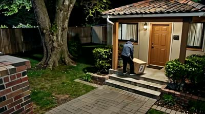
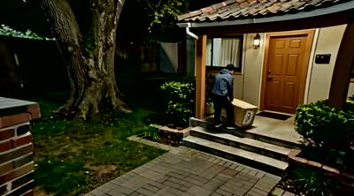
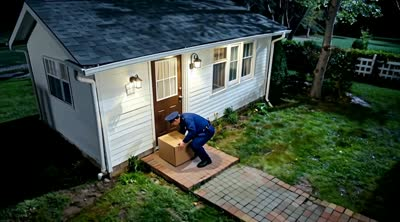
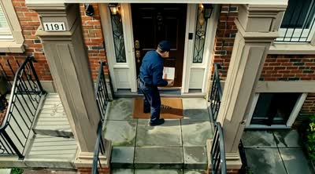
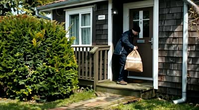
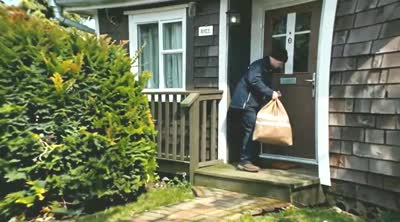

~500 labeled doorbell clips: toss, drop, placement, no handling, hidden.
Fisheye, low resolution, blur, noise and heavy compression, like real cameras.
Small classifier on frozen V-JEPA 2 video features, every 2-second window.
Clips from a different generator, plus real recordings.







